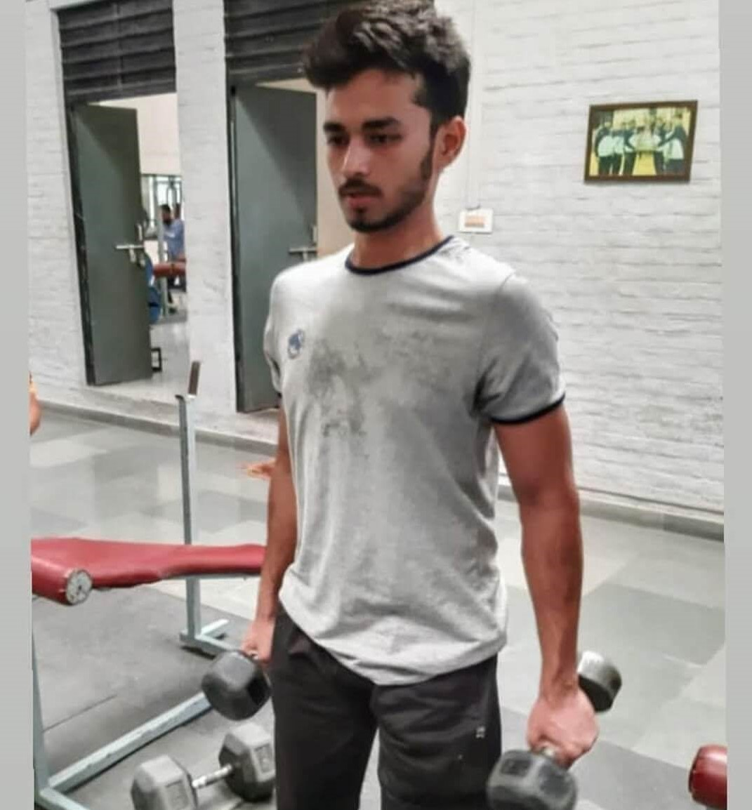

PLACEMENT POSTULATES -By DISHANT PAREWA
Hello Everyone, My name is Dishant Parewa, currently placed as a Software Developer at IIFL and today I am going to share my story. I hope many students will relate to it.

My Struggle with CPI
Started my first semester with an SPI of 5.6 which is something like a nightmare for me. At the end of the first year, I somehow managed my CPI to 6. But then again in the 4th semester, a big mess happened. I secured an SPI of 5.4 and I was feeling less confident about myself and started to doubt whether I can do further better or not. But then I figured out the mistakes and stopped thinking too much. I joined the gym which helped me a lot to channelize my negative thoughts positively and increased my confidence and as a result of this, I improved and scored my highest SPI(8.7) in the most hectic 5th semester of Civil Engineering. I was not interested in an internship in the 4th semester because I lacked the confidence and didn't acquire the required skills. But after the 5th semester, I was confident enough and I got 2-3 interview calls (Major from Jindal Steel) but got rejected.
Love For Coding
Honestly, If someone had asked me in my Third Year that I am going to be a Software Developer, I would have never believed it. I haven't secured a good grade in ESC 101 and therefore I didn't have enough confidence in coding. Till 6th semester I was not sure for which role I am going to sit in placements. But from the experience of interviews during the Internship I realized most of the companies ask for coding skills. So I took my first step and did a course on Python.
I slowly started gaining confidence in my coding skills and my next big step was to learn about Data Structures and Algorithms(DSA), but due to my low cpi and average grade in ESC(101), I couldn't get a formal course in College. So I did the course from Coursera. I started to enjoy the process and lockdown helped me to focus more on the subject. I started to practice DSA problems on various platforms like leetcode and hackerrank etc. Now by the start of placement season, I was gaining confidence in my coding skills and was ready for the placements.
Resume Preparation
Honestly, I started very late to figure out what I want to do. That's why I face problems in making a resume that gets selected. I didn't have great POR’s to include and hadn't done an internship. So I asked seniors about this and they helped me a lot and I came to know that Project plays a very important role in getting your resume selected. But by the time I was just doing coding and very little time was left for me and due to which I couldn't prepare for Aptitude properly but come up with a project that landed me a job at IIFL.So I will advise that never skip your project and prepare for the Aptitude Properly.
Placement Starts….
It was the toughest time I faced in my life. I expected that I would get placed by Day 3 but I was not able to clear rounds for many companies because of my weak Aptitude preparation. I was shortlisted for only three companies by Day 6 ( Gameskraft, Fareye, and Testbook) although I cleared the first round and in most I was not able to make it into further rounds. So I was completely devastated. Most of my friends were placed by Day 3. I was very frustrated by that time and started to overthink but thanks to my friends and family members who believed in me. Because of them I never lost hope and was continuously preparing and looking for the mistakes I made in my interview.
On the Night of Day 6, me and my friend Sujit(he was already placed ) were discussing my mistakes. He pointed out that I have good projects but why are you not getting selected. I marked his words and was prepared for Day 7
I had an inner sense that I am going to get the job today and on that day I got shortlisted for three companies and finally the interview happened and this time I made the recruiters look at my project and they were quite impressed. In the interview of IIFL, I got the inner feeling that I am going to work for the company and finally I got the call from SPO.
Tips and Tricks
- Start early and be clear about the role you want to prepare for
- Include good projects in your resume and revise them fully before the interview
- Know about every point in your resume, frame a story around it. Don’t include anything that you don’t know about
- Look for resources around the internet. There are various good Youtube channels you can follow. I will recommend following ( takeUforward and solve the Sdesheet it can help you a lot)
- Please focus on aptitude, never neglect it because everyone here is good at it
- Practice, Practice, Practice as many programming challenges as you can there is no substitute to it if you are preparing for Software Developer Role
- If you get the feeling that you are not getting the role, Always ask the interviewer for feedback.
- Adopt a habit that can prevent channelize your negative thoughts or overthinking
- Always share problems with your friend or with your family whomever you are comfortable with
- Keep your 7th semester as relaxed as possible because you have to devote a lot of time to practice the program in challenges. If possible, do courses in the summer if you can.